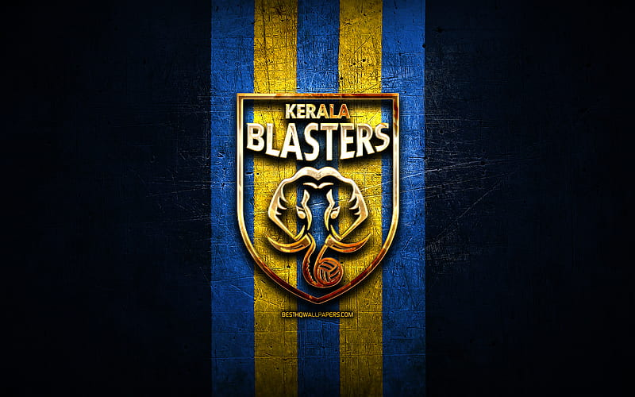
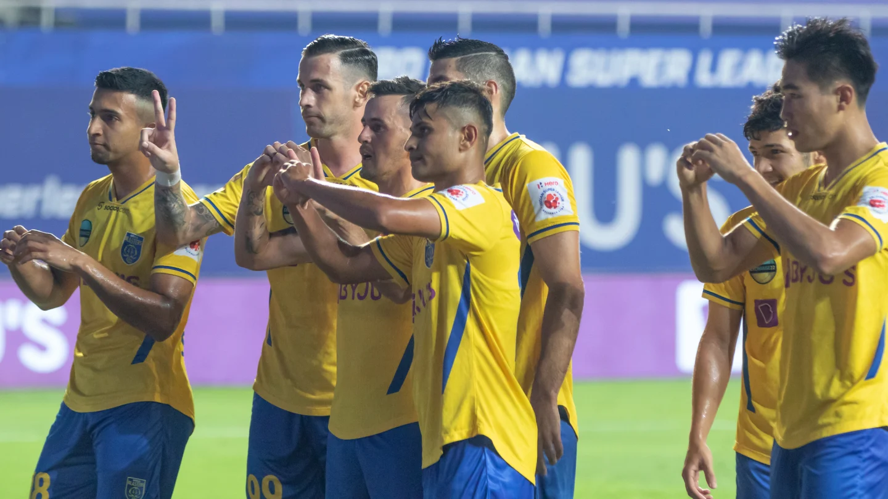
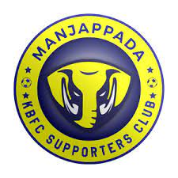
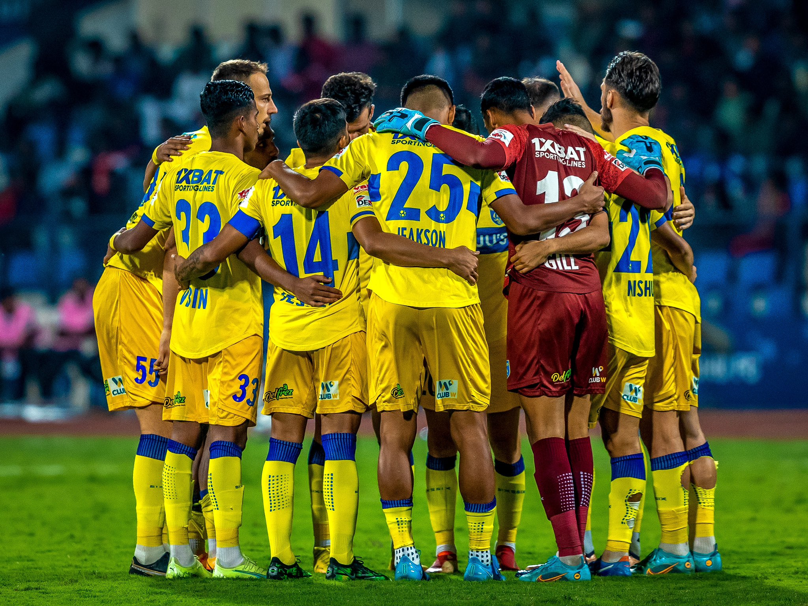

#YENNUMYELLOW
Introduction: Welcome to the heart of Indian football, where the vibrant spirit of the game meets the fervent energy of the fans – welcome to the home of the Kerala Blasters! Established in 2014, the Kerala Blasters Football Club has not only become a formidable force on the field but has also etched its name in the hearts of millions of football enthusiasts across the nation.

Club History: Founded with the aim of bringing top-tier football to the southern state of Kerala, the Blasters quickly became a symbol of pride and passion for its supporters. Over the years, the club has witnessed both triumphs and challenges, creating a rich tapestry of experiences that define its journey.

Iconic Moments: From the thrilling highs of reaching the Indian Super League (ISL) finals to the nail-biting encounters that have kept fans on the edge of their seats, Kerala Blasters have woven unforgettable memories into the fabric of Indian football history. The roaring cheers of the fans, clad in the iconic yellow, echo through the stadiums as the Blasters showcase their skill, determination, and teamwork.

The Yellow Brigade: What sets Kerala Blasters apart is not just their prowess on the field but the unwavering support they receive from their passionate fan base – the Yellow Brigade. The fans, known for their electrifying chants and undying loyalty, turn every match into a spectacle. It's more than a team; it's a community bound by the love for the beautiful game.

Community Engagement: Beyond the football pitch, the Kerala Blasters are committed to making a positive impact on the community. Through various initiatives, the club strives to promote grassroots football, nurture young talent, and contribute to the overall development of the sport in the region.

Looking Ahead: As the Kerala Blasters continue to evolve and face new challenges, the spirit of football and the unity of the Yellow Brigade remain unwavering. The future holds exciting possibilities, and the club is poised to create even more memorable moments that will resonate with fans for generations to come.
Join us in celebrating the legacy of the Kerala Blasters : where passion meets excellence, and every match is a testament to the beautiful game. Together, we cheer, we triumph, and we build a legacy that transcends the boundaries of the football pitch. Welcome to the world of Kerala Blasters – where the game is more than a sport; it's a way of life.